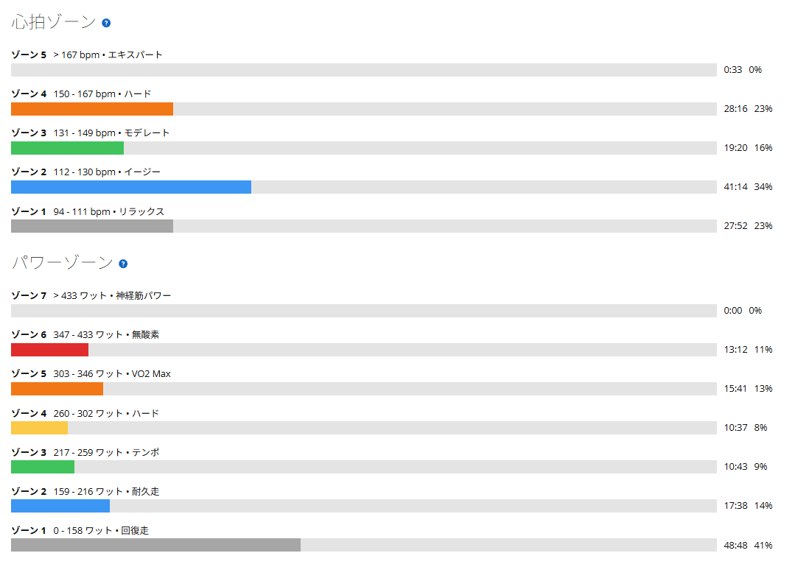

上を見たらキリがない。それでも今日は、最後の唐沢山まで踏み切れた
今日は天気が良かったので、ローラーの8分×4本ではなく、いつもの太平山反時計回りへ。登る場所が決まっていると、苦しい場所までだいたい分かっている。それでも走りに行ってしまう。11月2日のローラーSSTは20分×3本を274W、280W、280Wで揃えられ、昨日は友人と渡良瀬遊水地でTSS25の回復走。今日はその次の高強度である。

約52km・NP257W・TSS155
- 全体51.74km / 1時間58分26秒 / 獲得813m / 平均気温16.4℃
- 負荷平均183W / NP257W / IF0.888 / TSS155.1 / 20分最大279W / FTP設定289W
- 心拍・回転平均129bpm / 最大172bpm / 平均83rpm
- 太平山6分55秒 / 331W
- 琴平峠14分08秒 / 315W
- 唐沢山5分26秒 / 343W

平均183Wだけを見ると落ち着いて見えるが、下りや移動区間を挟むためで、登りではかなり踏んでいる。NP257W、TSS155という数字のほうが、今日のきつさに近い。
3つの山、全部が前回より上
| 日付 | 太平山 | 琴平峠 | 唐沢山 |
|---|---|---|---|
| 10月15日 | 6分59秒・332W | 14分17秒・314W | 5分29秒・359W |
| 10月22日 | 6分57秒・330W | 14分26秒・301W | 5分49秒・329W |
| 今日 | 6分55秒・331W | 14分08秒・315W | 5分26秒・343W |
太平山はかなり全力に近かった。前回の10月22日から約3秒だけだが、7分を切った前回からさらに更新できた。反時計回りでは一番速い。
琴平峠では、今日はだいぶ出力が上がっている感覚があった。前回から14W上がって、タイムは18秒短縮。315Wも14分08秒も、反時計回りで一番いい。途中で脚を使い切らず、長い登りでも踏み続けられたのはうれしい。
最後の唐沢山は、5倍に近づけるつもりでかなり頑張った。前回から14W上がって約23秒短縮。最後の最後でしっかり踏めた手応えがあった。もちろん風などの条件は毎回違うので、縮んだ秒数がすべて実力差とは限らない。
5倍で60分という世界
唐沢山の343Wは、体重約72kgで計算すると約4.76W/kg。5倍に届かせようと頑張ったが、平均では少し届かなかった。それでも世の中には、5W/kgを60分維持できる人がいる。私の体重なら360Wを1時間。今日、5分ちょっとであれだけ頑張った出力より高いワット数を、60分間ずっと踏み続けるということになる。本当にすごい。
5分と60分は、別競技と言いたくなるくらい違う。今の私のFTP設定は289Wで、約4.01W/kg。目標はローラーで300Wを60分回せるようになること。まずはそこからである。
腰の中央が、筋トレ後のように張った
走り終わったあと、全身の疲労は大きかった。でも、まったく動けないほどではない。少し気になったのは、背骨に沿った腰の中央あたりが、筋トレ後のように張って重だるかったこと。痛みはない。
8月から「腰で乗る」という感覚を意識していて、今日も登りで体幹を使っていたのかもしれない。ただ、腰が重いから筋肉を効率よく使えているとまでは言えない。前傾姿勢を支える筋肉が疲れただけ、という可能性もある。張りが続くようなら、ポジションや姿勢も見直したい。
勢いで次の高強度を決めない
11月2日はSST20分×3本が以前ほどきつくなく、今日は外の登りでも良い数字が並んだ。たまたま調子が良かった部分もあるだろうけれど、最近の練習が少しずつ形になっているのかもしれない。
ただ、全力に近い登りを何度も重ねたので、今日の疲労はそれなりに大きい。勢いだけで次の高強度を決めると、10月31日に8分走で失敗したときのように、疲労の影響が分からなくなる。明日の腰と脚の感覚は、きちんと見ておきたい。60分5倍の世界はまだ遠い。だからこそ、今日のような小さな更新を拾っていこうと思う。